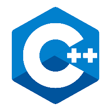

Hi , I'm Nithin Kumar
ASIC Verification Engineer | Python Developer | Web designer
About Me
Hi there, Nice to meet you. First of all, thanks for taking time to know more about me. My name is Nithin Kumar M and I am from Bangalore, Karnataka (India). My hometown is Mysore. I have completed my Bachelors of Engineering(B.E) in Electronics and Instrumentation from M.S.Ramaiah Institute of Technology.
I've spent 6+ years working across different Design and Performance verification projects at IP and SOC level. I have sound knowledge on the Design Verification cycle , Standard industry protocols, ARM Architecture ,System Verilog, Universal Verification Methodology, Python and Web development technologies. I currently lead Performance Verification for L3 cluster in the Graphics pipeline at Intel Technology India Private Limited..
I spend my free time doing web designing, coding in python or learning new technologies online. I'm passionate about Electronics, Technology, Space Exploration, Gadgets and evrything related to science. My hobbies include reading books, travelling , cycling ,playing tennis, chess and badminton. Most of the time you will find me occupied learning something new or spending quality time with family and friends. Lets get in touch and discuss more !!
Work Experience
Graphics Performance Verification Engineer | INTEL Corporation | October 2020 to Present
- Role : Lead Performance verification of L3 cluster in the Graphics pipeline for all projects
- Responsible for planning performance scenarios, coding tests and testbench components in SV and UVM
- Good knowledge on the complete verification cycle, milestones and deliverables
- Sound knowledge of the Graphics pipeline and Architecture
- Good exposure to Performance debugs w.r.t Bandwidth and latency at Cluster, GT, SOC and Emulation level
- Familiar with discreate, integrated and server side Graphics solutions
Architecture Verification Engineer | ARM Embedded Technology | August 2018 to September 2020
- Developed tests using ARM Assembly for v7A and v8A Architecture profiles within ATEG group
- Familiar with Arm Architecture concepts and worked on ISA, Floating point, Exception Model
- Good exposure to Architecture debug using tarmac trace
- Coded multiple automation scripts using Python for TestDBV2 Activity
- Good knowledge on ARM ACK release,ModelDebugger & CentOS checks
ASIC Verification Engineer | TATA Elxsi | August 2016 to September July 2018
- I was part of 4 different IP and SOC level projects for RENESAS client
- Good exposure to coding UVM Testbench components like Sequencer, driver and scoreboard
- Hands-on exposure to writing system verilog assertions and coverage
- Good knowledge of AXI , EThernet , CAN and CAN-FD protocols
Professional Skills
